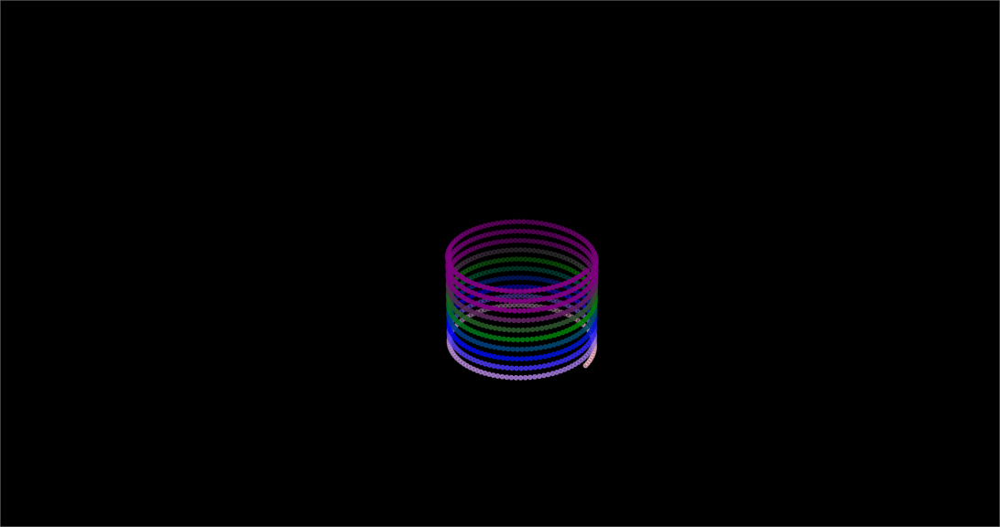

3D HELIX SPRING

This is the final project/exam in our major subject on linear algebra, we made a 3D helix spring using python matplotlib.
Technologies Used: MATPLOTLIB AND PYTHON
View ProjectLAIHS WEB LEARNING SITE

This learning website is part of our research last year, we made a website just to fulfill the requirements in our subject practical research
Technologies Used: GOOGLE SITE
View ProjectFINAL PROJECT IN FUNDAMENTALS PROGRAMMING

This project aims to evaluate students ability to analyze, explain, and defend the behavior of Python programming constructs including loops, conditionals, functions, and recursion—within the context of a real-life computing problem. Students will design and implement a small “mini-machine” program that demonstrates their understanding of algorithmic thinking and highlights how the base case is identified and used to ensure correct program behavior, especially in recursive or iterative problem-solving.
Technologies Used: PYTHON
View Project